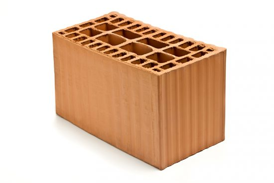

|
Ladrillo Comun |
El ladrillo común es el que se elabora artesanalmente con arcilla y tierra. En primera
instancia, se
genera un barro
denso que luego se coloca en un molde y, finalmente, se cocina alrededor de un fuego, en lo que
se
conoce como
“horneada”. |

|
Ladrillo a la vista |
El ladrillo visto es aquel que se elabora especialmente para que quede sin revoque exterior y,
de
ese modo, puedan ser
parte de la estética de la edificación. Para ello, se debe cuidar el acabado de varias de sus
caras,
lo que permitirá
dejarlos “a la vista” una vez colocados. |
|

|
Ladrillo hueco |
Se trata de un bloque de arcilla cocida que posee perforaciones horizontales o verticales, por
lo
que su peso se reduce
notablemente |
|
|
Ladrillo Retak |
Retak es en realidad la marca de una empresa dedicada a la fabricación de un tipo particular de
bloques para la
construcción, que utiliza un material específico: el Hormigón Celular Curado en Autoclave
(HCCA).
|
|
|
Ladrillo Refractario |
Es un tipo de ladrillo o tejuela cerámica especial, que posee un acabado de textura
relativamente
lisa y homogénea. Se
utiliza generalmente como revestimiento de lugares que estarán sometidos constantemente a altas
temperaturas, como por
ejemplo parrillas, hornos, hogares y chimeneas. |
|
|
Ladrillo de vidrio |
Este tipo de ladrillo es, en realidad, una pieza de vidrio moldeado
a
muy altas temperaturas, lo que
genera una doble
pared vidriada con una cámara de aire en el medio. Esta cámara de aire le proporciona un gran
nivel
de aislamiento
térmico y acústico. |